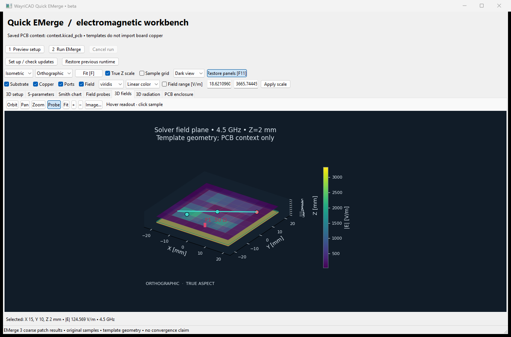

This help describes current development source beyond the published 3.6.43-beta.1 package. Read-only templates use the saved PCB as context; rule-area studies import actual enclosed two-layer copper.
Workers run outside the UI. Cancel retains diagnostic files. Completed run folders contain the reviewed request, source hashes, result and solver log. Source PCB and project files are not written. Reviewed 2D/3D geometry stays visible during the solve. Generate preview renders the report inside the workbench; Export HTML and Export PDF save copies with retained probes. New results replace old report state.
Save a two-layer board with closed Edge.Cuts and filled zones, then draw a polygonal board rule area. Choose Saved PCB rule-area region, load saved rule areas, select F.Cu signal and B.Cu reference nets, and review the material and bare-copper model. Preview clipped copper and ideal ports before running. Unsaved changes are excluded.
Concavity and holes are preserved. A valid port crosses an actual rule-area cut with reference copper across its full span; board edges do not invent ports. The full two-layer column is cropped, irrespective of keepout permissions. The path supports 1-8 ideal boundary ports. Inside drilled features, unfilled zones, unselected cut conductors, incomplete returns, ambiguous corners and curved contours block simulation. General multilayer/via-barrel/component extraction and interior feeds remain unsupported. The separate internal via template does not change those extraction limits.
Driven/optimization patch templates optionally add an external feed strip inside the substrate, with an optional signed patch-center Y offset. Both default to zero; a nonzero strip moves the ideal feed port to its outer end. It is not a connector/coax model.
Native VTK supplies 3D geometry/fields; 2D plots and charts use Matplotlib. Compact Orbit, Pan, Zoom and Probe buttons select interaction; Fit, zoom and Image controls sit alongside. View options select camera/projection, visibility, color scale and physical Z aspect or labeled display exaggeration. Focus expands/restores the workspace. Display controls never change solver geometry.
Inspect original E magnitude [V/m], H magnitude [A/m], power-flow magnitude [W/m2] or temperature [K], when present. Optional field sampling adds up to 17 Z layers / 100,000 samples for point-cloud display and XY slices. These are recorded samples, not arbitrary continuous-volume interpolation. A chart frequency click does not recompute fields at another frequency or excitation. Unknown samples stay missing. A sample grid is not the FEM mesh.
Probe links selected original samples between 2D/3D views. Inspector supports extrema, pinned samples and CSV export. Line cut uses nearest original samples against distance and does not invent measurements. Radiation is relative field magnitude; normalized radius is not gain, efficiency or physical distance.
Charts provide magnitude, phase, group delay, impedance, diagnostics and Smith views for available networks. Network tools offer renormalization, mixed mode, termination, ideal R/L/C embedding and AAA/vector fitting. Each starts from the original solved network and records a separate derived result/Touchstone. Fields keep their original excitation; fitted data are not new FEM solves.
Report offers Generate preview, Export HTML and Export PDF. Reports include model scope, source checks, response/field charts, selected quantity/slice, probes/profiles, limitations and derived-network evidence. HTML embeds its assets; PDF needs ReportLab. Stale source/configuration rejects publication. Supported driven/array studies can also export planar-sheet DXF and Optycal-compatible numeric far-field MsgPack.
Development studies include driven EM, periodic Floquet, scattering, TE10 waveguide, finite arrays, bounded optimization, steady/transient substrate thermal conduction and dielectric RF heating. Controls expose simplified finite-conductor/loss/dispersion models and ABC/PEC/PMC/PML boundaries. Imports require reviewed recipes and manifests; this is not a complete visual CAD editor. RF thermal coupling excludes copper surface heating.
Latest EMerge 3+ is installed into a separate candidate with CAD/export requirements. Dependency checks and 22 real compatibility checks must pass before activation; allow several minutes (20-minute gate limit). Updates are checked daily, failed candidates retain the working runtime, and a compatible previous runtime can be restored. Existing packages are not upgraded in place. Stale certificates trigger requalification. Setup controls allow retry or an existing solver interpreter.
The tested baseline is EMerge 3.0.0b9/SuperLU. Coarse compatibility solves do not establish convergence, antenna accuracy, power balance or array null depth. Read adaptive-limit warnings. Optional accelerators and arbitrary future APIs need separate qualification. Current native component tests do not prove live KiCad menu launch or physical mouse acceptance for the redesigned UI.
The following actual captures show the earlier beta layout, not the current workbench. Local interpreter/output paths were replaced by generic paths; numerical samples and synthetic-board geometry were preserved. These coarse runs do not demonstrate converged designs.


See the user guide, capability inventory and dated validation evidence for exact scope.